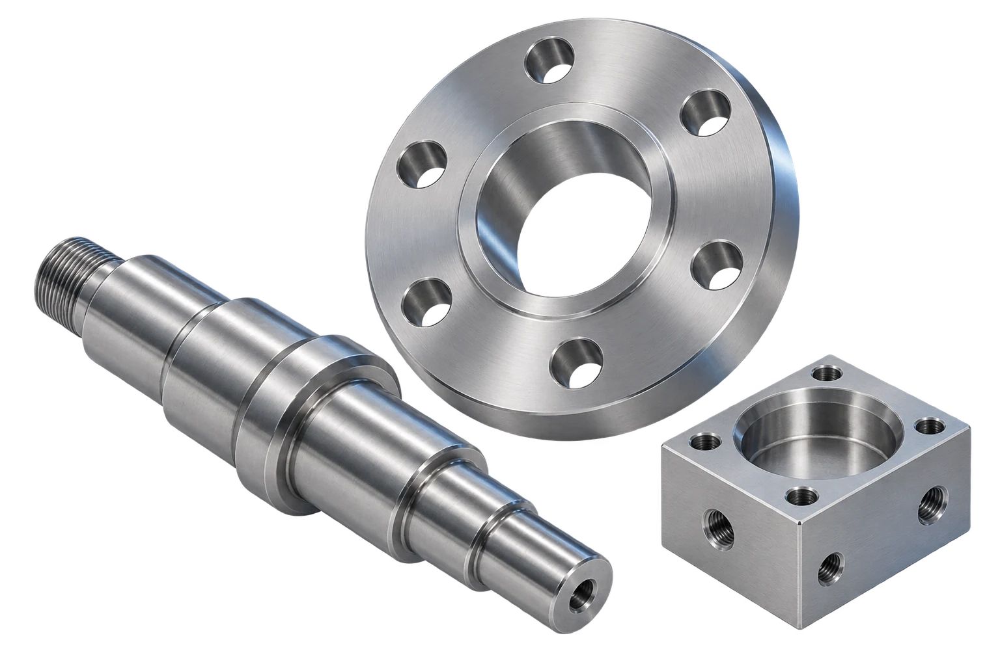

Uma peça
sob medida
Seu desenho técnico como ponto de partida para avaliar a fabricação do componente.
Quero avaliar um projetoUsinagem em Araquari, SC
Soluções em usinagem para transformar a necessidade da sua indústria em uma peça sob medida.
Toque nas peças para conhecer

Furos, diâmetros e superfícies que precisam se encontrar no conjunto.
Peças ilustrativas geradas por IA. Não representam o catálogo da AZ3.
Uma conversa técnica.
Um caminho para a sua demanda.
Cada peça tem uma função. O primeiro passo é entender a aplicação, as medidas e o que você precisa resolver.
Seu desenho técnico como ponto de partida para avaliar a fabricação do componente.
Quero avaliar um projetoUma necessidade de manutenção que começa pela análise da peça e de sua aplicação.
Quero apresentar uma demandaQuantidade, especificações e frequência para conversar sobre demandas em lote.
Quero conversar sobre um loteProposta de organização dos serviços. Escopo e capacidade de atendimento a confirmar com a AZ3.

Por trás de cada peça, existe uma necessidade que merece ser entendida.
A AZ3 Usinagem está em Araquari, Santa Catarina. Esta proposta apresenta uma forma mais direta de aproximar a empresa de quem busca soluções em usinagem.
Entender a aplicação, conversar sobre o projeto e alinhar o que precisa ser produzido: esse é o atendimento que queremos destacar no novo site.
Conte o que você precisaUm caminho simples para reunir as informações da sua peça e avançar na avaliação.
Explique onde a peça será usada e o que precisa ser resolvido.
Desenho, medidas, material e quantidade ajudam a entender a demanda.
Escopo, condições e prazo precisam ser avaliados para cada projeto.
Com a proposta aprovada, combine as etapas do atendimento.
Algumas informações deixam
a conversa mais objetiva.
Reúna o desenho ou as medidas disponíveis, a aplicação, o material desejado, a quantidade e a data em que precisa da peça. Esses dados ajudam na avaliação inicial.
Comece descrevendo sua necessidade e os dados que já tem. A AZ3 deverá confirmar quais informações e documentos serão necessários para avaliar o projeto.
O prazo deve ser confirmado no orçamento, considerando as características da peça, a quantidade e a disponibilidade de produção. Este estudo não estabelece prazos de entrega.
A lista de materiais, dimensões e quantidades será validada com a AZ3 antes da publicação do site. Por enquanto, informe as especificações desejadas para uma avaliação.
Conte sua necessidade e reúna as informações do projeto para conversar com a AZ3.
Esta é uma demonstração do layout. O canal comercial será conectado após a confirmação dos contatos da AZ3. Nenhuma solicitação foi enviada.